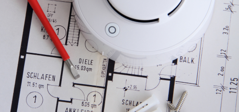

автоматическое пожаротушение, монтаж и обслуживание
Мы занимаемся разработкой проектирования системы пожаротушения. С учетом всех характеристик объекта, разрабатываются способы подбора и монтажа оборудования, а также его дальнейшее обслуживание.

Оповещение и управление эвакуацией людей о пожаре.
Анализ ситуации на объекте. Подготовка документации в соответствии с требованиями заказчика. Согласование предварительных вариантов.Утверждение проекта контролирующими органами.
